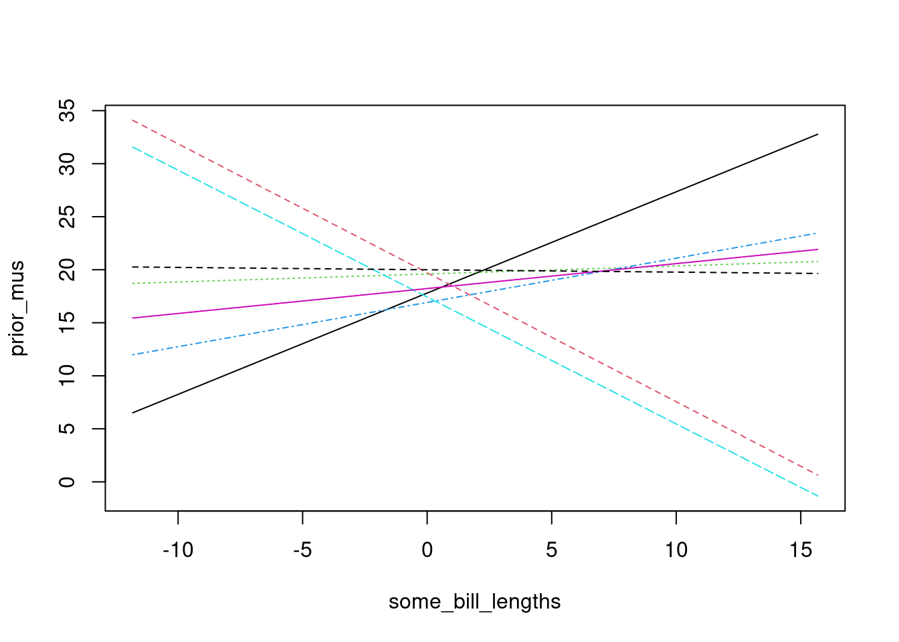
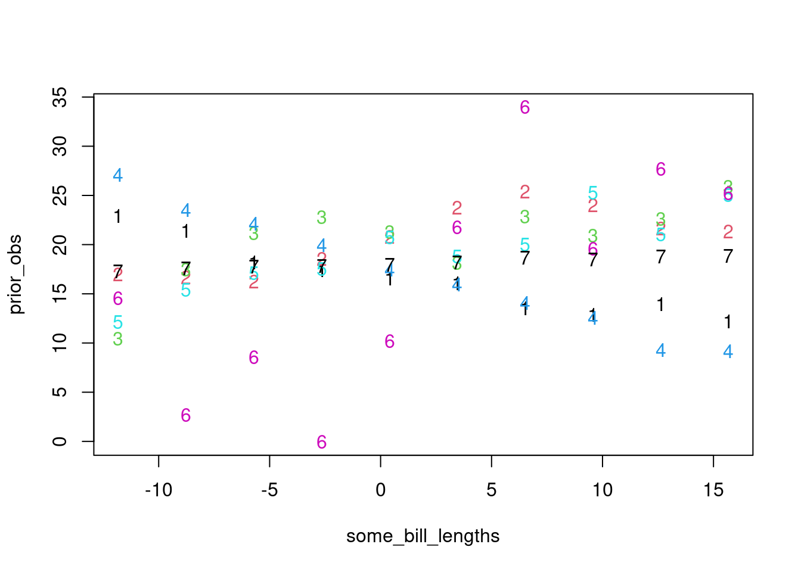
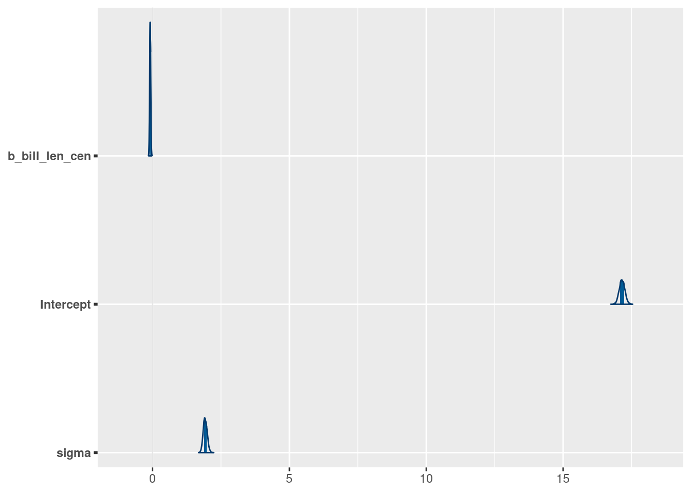
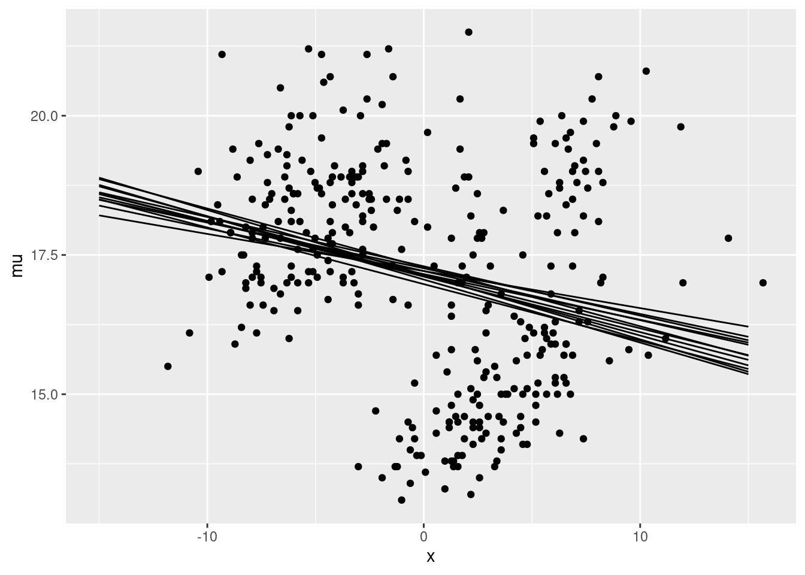
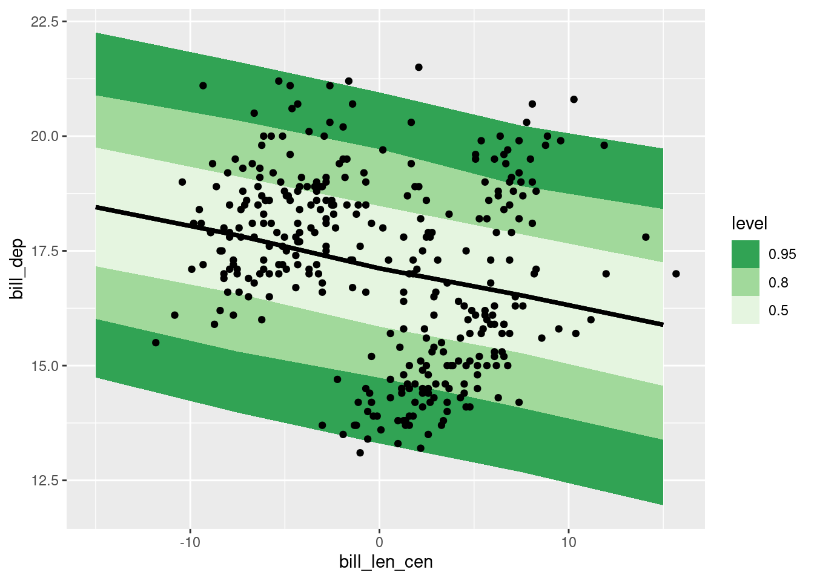

library(ggplot2)
suppressPackageStartupMessages(library(dplyr))
library(tidybayes)
suppressPackageStartupMessages(library(brms))Univariate regression
The shortest route to science is a straight line.
Load packages and data
Statistical models of Penguin bill morphology.
We’ll be studying the relationship between two numbers about penguin bills. Specifically, we’ll ask “Are longer bills also deeper?”. This question might not be the most interesting ecologically, but it is a great chance to practice some interesting stats.
Let’s begin with plotting the data:
penguins |>
ggplot(aes(x = bill_len, y = bill_dep)) +
geom_point() +
stat_smooth(method = "lm")`geom_smooth()` using formula = 'y ~ x'Warning: Removed 2 rows containing non-finite outside the scale range
(`stat_smooth()`).Warning: Removed 2 rows containing missing values or values outside the scale range
(`geom_point()`).
palmerpenguins dataset.Let’s write a simple statistical model for these data:
\[ \begin{align} \text{Bill depth}_i &\sim \text{Normal}(\mu_i, \sigma) \\ \mu_i &= \beta_0 + \beta_1\times\text{Bill length}_i \\ \beta_0 &\sim \text{Normal}(??) \\ \beta_1 &\sim \text{Normal}(??) \\ \sigma &\sim \text{Exponential}(??) \end{align} \]
What should our priors be? Before we can answer that, we have a more important question:
WHERE IS ZERO??
It has to be somewhere. Does it make sense? take control and choose for yourself.
If we fit a model like this without thinking about the location of zero, we get some pretty silly answers:
coef(lm(bill_dep ~ bill_len, data = penguins))(Intercept) bill_len
20.88546832 -0.08502128 When the value of bill length is 0, the average of the response is the intercept:
\[ \begin{align} \mu_i &= \beta_0 + \beta_1\times\text{Bill length}_i \\ \mu_i &= \beta_0 + \beta_1\times0 \\ \mu_i &= \beta_0 \\ \end{align} \]
But, if we take the data as we found it, we’re going to be talking about \(\beta_0\) as the depth of a penguin’s bill when the bill has 0 length! Clearly that isn’t a very meaningful value. From the point of view of setting priors and interpreting coefficients, it helps a lot to set a meaningful 0.
A very common choice is to subtract the average from your independent variable, so that penguins with an average bill length now have an average of 0:
\[ \begin{align} \text{Bill depth}_i &\sim \text{Normal}(\mu_i, \sigma) \\ \mu_i &= \beta_0 + \beta_1\times(\text{Bill length}_i - \overline{\text{Bill length}})\\ \beta_0 &\sim \text{Normal}(??) \\ \beta_1 &\sim \text{Normal}(??) \end{align} \]
Now \(\beta_0\) means the average bill depth at the average bill length. It becomes easier to think about priors:
\[ \begin{align} \text{Bill depth}_i &\sim \text{Normal}(\mu_i, \sigma) \\ \mu_i &= \beta_0 + \beta_1\times(\text{Bill length}_i - \overline{\text{Bill length}})\\ \beta_0 &\sim \text{Normal}(17,2) \\ \beta_1 &\sim \text{Normal}(0,.5) \\ \sigma &\sim \text{Exponential}(0.5) \end{align} \]
Exercise
What continuous predictors have you used in your analysis? How would you find a biologically meaningful zero? Think about how you would center time, age, mass, fitness etc.
Prior predictive simulations
Armed with this model, it becomes much easier to think about prior predictions.
We’ll make a bunch of lines implied by the equation above. There’s two steps:
- Center the predictor
- Make up a vector that goes from the minimum to the maximum of the predictor. This is just for convenience!
bill_len_centered <- with(penguins,
bill_len - mean(bill_len,
na.rm = TRUE))
## make up a short vector
some_bill_lengths <- seq(
from = min(bill_len_centered, na.rm = TRUE),
to = max(bill_len_centered, na.rm = TRUE),
length.out = 10
)
Shortcuts to these common tasks
These tasks are so common that they are automated in helper functions.
For centering predictors, see the base R function ?scale (however, doing this by hand is often more convenient)
For creating a short vector over the range of a predictor, see modelr::seq_range. The R package modelr has many different functions to help with modelling.
To simulate, we’ll use some matrix algebra, as we saw in lecture:
slopes <- rnorm(7, 0, .5)
inters <- rnorm(7, 17, 2)
X <- cbind(1, some_bill_lengths)
B <- rbind(inters, slopes)
knitr::kable(head(X))| some_bill_lengths | |
|---|---|
| 1 | -11.8219298 |
| 1 | -8.7663743 |
| 1 | -5.7108187 |
| 1 | -2.6552632 |
| 1 | 0.4002924 |
| 1 | 3.4558480 |
knitr::kable(head(B))| inters | 17.800961 | 19.712418 | 19.5981239 | 16.9154398 | 17.420657 | 18.2270240 | 19.9969465 |
| slopes | 0.954987 | -1.216056 | 0.0751899 | 0.4172894 | -1.196346 | 0.2350828 | -0.0222059 |
prior_mus <- X %*% B
matplot(x = some_bill_lengths,
y = prior_mus, type = "l")
Exercise
Copy the code above. Increase the number of simulations. Which priors are too wide? Which are too narrow?
Simulating Observations
There are always at least TWO kinds of predictions we can be thinking about:
- Predicted averages. This is often called a “confidence” interval for a regression line.
- Predicted observations. This is often called a “prediction” interval.
We can use the full model to simulate observations!
slopes <- rnorm(7, 0, .5)
inters <- rnorm(7, 17, 2)
sigmas <- rexp(7, rate = 0.3)
X <- cbind(1, some_bill_lengths)
B <- rbind(inters, slopes)
prior_mus <- X %*% B
prior_obs <- matrix(0, nrow = nrow(prior_mus), ncol = ncol(prior_mus))
for (j in 1:ncol(prior_obs)) {
prior_obs[,j] <- rnorm(n = nrow(prior_mus),
mean = prior_mus[,j],
sd = sigmas[j])
}
matplot(x = some_bill_lengths,
y = prior_obs, type = "p")
Tidyverse style for those who indulge:
tibble(
sim_id = 1:7,
slopes = rnorm(7, 0, .5),
inters = rnorm(7, 17, 2),
sigmas = rexp(7, rate = 0.2)
) |>
mutate(x = list(seq(from = -10, to = 10, length.out = 6))) |>
rowwise() |>
mutate(avg = list(x * slopes + inters),
obs = list(rnorm(length(avg), mean = avg, sd = sigmas)),
sim_id = as.factor(sim_id)) |>
tidyr::unnest(cols = c("x", "avg", "obs")) |>
ggplot(aes(x= x, y = avg, group = sim_id, fill = sim_id)) +
geom_line(aes(colour = sim_id)) +
geom_point(aes(y = obs, fill = sim_id), pch = 21, size = 3) +
scale_fill_brewer(type = "qual") +
scale_colour_brewer(type = "qual") +
facet_wrap(~sim_id)
EXERCISE
Pick one of the two simulations above and modify it. Here are some suggested modifications:
- Experiment with priors that are “too narrow” or “too wide”.
- Try a different distribution than the one used
- Instead of bill size, imagine that we are applying this model to YOUR data. What would you change?
Linear regression in brms
Now we write some brms code for this model. We’ll begin with a simple model that has no posterior predictions:
## get data ready
peng_dep_len_df <- penguins |>
tidyr::drop_na(bill_dep, bill_len) |>
mutate(bill_len_cen = bill_len - mean(bill_len))
# write formula
normal_reg_bf <- bf(bill_dep ~ bill_len_cen, family = gaussian())
## make priors
get_prior(normal_reg_bf, data = peng_dep_len_df) prior class coef group resp dpar nlpar lb ub tag
(flat) b
(flat) b bill_len_cen
student_t(3, 17.3, 2.5) Intercept
student_t(3, 0, 2.5) sigma 0
source
default
(vectorized)
default
defaultnormal_reg_prior <- c(
prior(normal(0, .5), class = "b"),
prior(normal(17, 2), class = "Intercept"),
prior(exponential(.5), class = "sigma", lb = 0)
)
normal_reg_brm <- brm(formula = normal_reg_bf,
prior = normal_reg_prior,
data = peng_dep_len_df, file = here::here("topics/02_regression/normal_regression.rds"),
file_refit = "on_change", refresh = 0L)get the variable names
tidybayes::get_variables(normal_reg_brm) [1] "b_Intercept" "b_bill_len_cen" "sigma" "Intercept"
[5] "lprior" "lp__" "accept_stat__" "stepsize__"
[9] "treedepth__" "n_leapfrog__" "divergent__" "energy__" normal_reg_brm |>
bayesplot::mcmc_areas(pars = c("b_bill_len_cen", "Intercept", "sigma"))
EXERCISE
Discussion : Look just at the posterior distribution of the slope right above. Do we have evidence that there’s a relationship between bill length and bill depth?
Posterior predictions in R
We can calculate a posterior prediction line directly in R for these data. I’ll show each step in this workflow separately:
normal_reg_brm |>
spread_rvars(b_bill_len_cen, Intercept, sigma)# A tibble: 1 × 3
b_bill_len_cen Intercept sigma
<rvar[1d]> <rvar[1d]> <rvar[1d]>
1 -0.085 ± 0.019 17 ± 0.1 1.9 ± 0.072tidybayes helps us extract the posterior distribution of the parameters into a convenient object called an rvar. Learn more about tidybayes here and about the rvar datatype here
Next we combine these posteriors with a vector of observations to make a posterior distribution of LINES:
normal_reg_predline <- normal_reg_brm |>
tidybayes::spread_rvars(b_bill_len_cen, Intercept) |>
tidyr::expand_grid(x = seq(from = -15, to = 15, length.out = 5)) |>
mutate(mu = Intercept + b_bill_len_cen*x)
normal_reg_predline# A tibble: 5 × 4
b_bill_len_cen Intercept x mu
<rvar[1d]> <rvar[1d]> <dbl> <rvar[1d]>
1 -0.085 ± 0.019 17 ± 0.1 -15 18 ± 0.31
2 -0.085 ± 0.019 17 ± 0.1 -7.5 18 ± 0.18
3 -0.085 ± 0.019 17 ± 0.1 0 17 ± 0.10
4 -0.085 ± 0.019 17 ± 0.1 7.5 17 ± 0.18
5 -0.085 ± 0.019 17 ± 0.1 15 16 ± 0.31Finally we’ll plot these:
normal_reg_predline |>
ggplot(aes(x = x, dist = mu)) +
stat_lineribbon() +
geom_point(aes(x = bill_len_cen, y = bill_dep),
inherit.aes = FALSE,
data = peng_dep_len_df)
Using posterior draws individually
The above workflow makes a nice figure, but perhaps it helps to see the individual lines to understand what is happening here. We can get these with another tidybayes function spread_draws:
normal_reg_predline_draws <- normal_reg_brm |>
tidybayes::spread_draws(b_bill_len_cen, Intercept, ndraws = 12)
knitr::kable(normal_reg_predline_draws)| .chain | .iteration | .draw | b_bill_len_cen | Intercept |
|---|---|---|---|---|
| 2 | 446 | 1446 | -0.0706029 | 17.21994 |
| 4 | 614 | 3614 | -0.0881541 | 17.21511 |
| 2 | 33 | 1033 | -0.0790708 | 17.01977 |
| 1 | 325 | 325 | -0.0812637 | 17.22786 |
| 1 | 211 | 211 | -0.0759466 | 17.27884 |
| 1 | 551 | 551 | -0.1104298 | 17.22524 |
| 4 | 735 | 3735 | -0.0878046 | 17.39996 |
| 3 | 282 | 2282 | -0.0927001 | 17.10126 |
| 2 | 321 | 1321 | -0.0627590 | 17.24024 |
| 3 | 194 | 2194 | -0.0843824 | 17.15836 |
| 1 | 43 | 43 | -0.1089193 | 17.16261 |
| 1 | 912 | 912 | -0.0696936 | 17.06779 |
normal_reg_predline_draws |>
tidyr::expand_grid(x = seq(from = -15, to = 15, length.out = 5)) |>
mutate(mu = Intercept + b_bill_len_cen*x) |>
ggplot(aes(x = x, y = mu, group = .draw)) +
geom_line() +
geom_point(aes(x = bill_len_cen, y = bill_dep),
inherit.aes = FALSE,
data = peng_dep_len_df)
Posterior predicted observations
data.frame(bill_len_cen = seq(from = -15, to = 15, length.out = 5)) |>
tidybayes::add_predicted_rvars(normal_reg_brm) |>
ggplot(aes(x = bill_len_cen, ydist = .prediction)) +
stat_lineribbon() +
geom_point(aes(x = bill_len_cen, y = bill_dep),
inherit.aes = FALSE,
data = peng_dep_len_df) +
scale_fill_brewer(palette = "Greens", direction = -1)
EXERCISE
Extend this model to include species. Specifically, let each species have its own value of the intercept. This involves combining this regression example with the previous activity on discrete predictors.
When you’re done, look at the resulting summary of coefficients. What do you notice that’s different?
SOLUTION
We set up a list for this model just as we did before. Note that this time we are using TRIPLE the pred_values, because we want to run independent predictions for each species.
Exercise!
- We have one model without species identity as an independent variable, and one which includes species. Look at the difference in \(\sigma\) between these two models. Why did the value change?
- Posterior predictions Edit the generated quantities blocks of
normal_regression.stanandnormal_regression_spp.stanto create replicate observations for all N observations (that is,yrepas we did in the model of bill depth previously). Use this to compare the models usingbayesplot::ppc_dens_overlay()or another function from the bayesplot package.